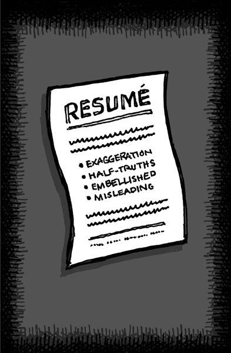

{% include JB/setup %}
{% raw %}
<div>

<h2 id="filepos202883" class="calibre19"><span class="calibre2"><a class="calibre13"></a><strong class="calibre14">Strangers at a cocktail party</strong></span></h2><div class="calibre4"></div>
<p class="calibre7">If you go to a cocktail party where everyone is a stranger, the conversation is dull and stiff. You make small talk about the weather, sports, TV shows, etc. You shy away from serious conversations and controversial opinions.</p>
<p class="calibre17">A small, intimate dinner party among old friends is a different story, though. There are genuinely interesting conversations and heated debates. At the end of the night, you feel you actually got something out of it.</p>
<p class="calibre17">Hire a ton of people rapidly and a "strangers at a cocktail party" problem is exactly what you end up with. There are always new faces around, so everyone is unfailingly polite. Everyone tries to avoid any conflict or drama. No one says, "This idea sucks." People appease instead of challenge.</p>
<p class="calibre17">And that appeasement is what gets companies into trouble. You need to be able to tell people when they're full of crap. If that doesn't happen, you start churning out something that doesn't offend anyone but also doesn't make anyone fall in love.</p>
<p class="calibre17">You need an environment where everyone feels safe enough to be honest when things get tough. You need to know how far you can push someone. You need to know what people really mean when they say something.</p>
<p class="calibre17">So hire slowly. It's the only way to avoid winding up at a cocktail party of strangers.</p>
<p class="calibre3"><a class="calibre16"></a></p><div class="calibre4"></div>
</div>

{% endraw %}

